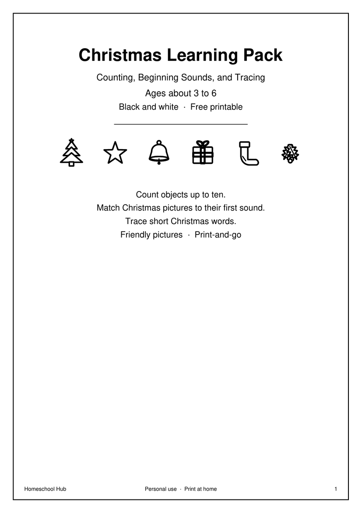

Free printable
Christmas Learning Pack
Ages about 3–6
What this teaches: The child counts to 10 and matches the number, hears the first sound of simple Christmas words, and traces a few short Christmas words.
What comes next: They count decorations on a real tree or windowsill, or try the beginning sounds pack.
What you need: A pencil, scissors are not required; colours help for the bauble patterns.
